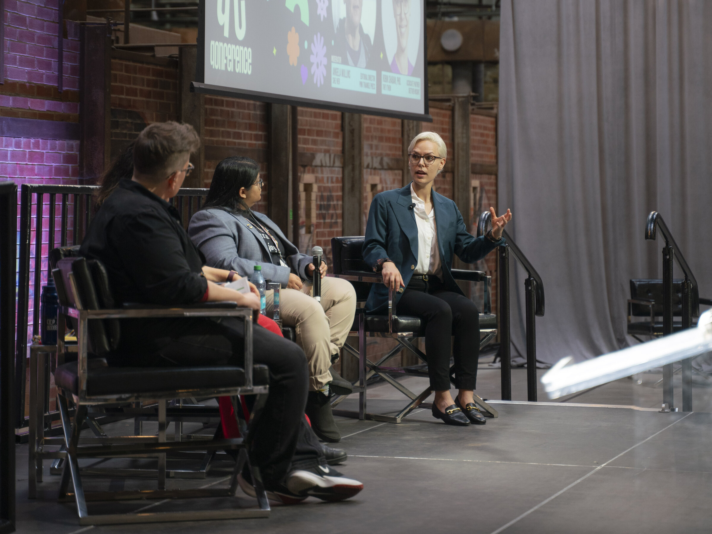

Bio
Robin Shaban is a Canadian economist and public policy expert specialising in competition, market structure, data governance, digital identity, and inclusive growth. Their practice serves firms, investors, foundations, and institutional clients through commissioned research, public-interest engagement, speaking, and board service.
As a Partner at 2R Strategy, Robin advises firms and investors on competition, regulation, and the economic forces shaping their strategic environment. They are also Senior Advisor at the International Identification Code Industry Alliance (ICA), a Singapore-based organisation working to create greater interoperability between global identity code standards.
Robin's doctoral research examined the role of efficiencies defenses within competition law in Canada and globally. That work and parliamentary testimony shaped the 2022 to 2024 reforms to the Canadian Competition Act, alongside various studies commissioned by Canadian think tanks and the Canadian government.
As co-founder and Chair of the Canadian Anti-Monopoly Project, Robin supports public education on competition policy issues in Canada. Robin is also a Fellow at the Public Policy Forum and a Globe and Mail Changemaker.
Based in Toronto, Robin works with clients across Canada and internationally. Academic credentials include a doctorate in public policy from Carleton University, a master's in economics from Queen's University, a bachelor's in economics from the University of Alberta, and the ICD.D designation from the Rotman School of Management at the University of Toronto.

Robin holds the ICD.D designation from the Rotman School of Management. As co-founder and current Chair of the Canadian Anti-Monopoly Project and Senior Advisor helping to establish the International Identification Code Industry Alliance (ICA), Robin brings substantive expertise in competition policy, regulatory risk, and digital governance to board environments.
- Designation ICD.D, Rotman School of Management
- Founding Co-founder and Chair, Canadian Anti-Monopoly Project
- Advisory Founding governance contribution, ICA
- Expertise Competition policy, regulatory risk, digital governance, market structure analysis